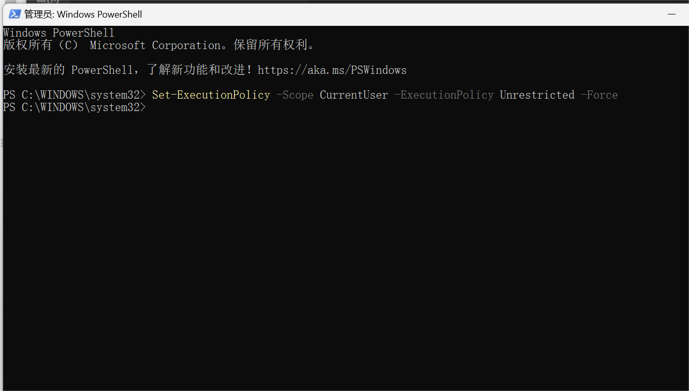
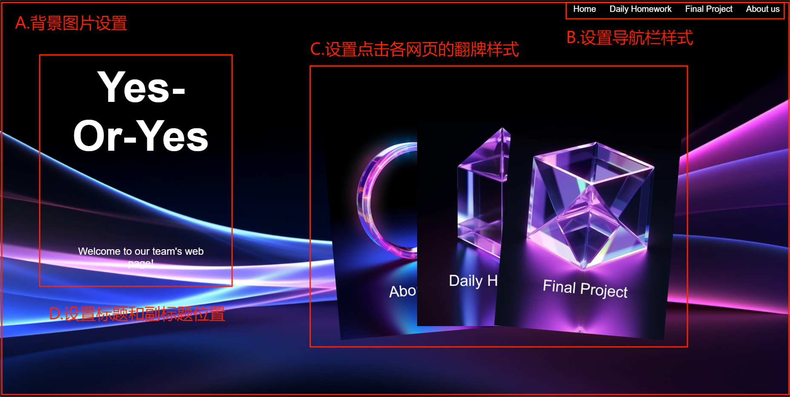
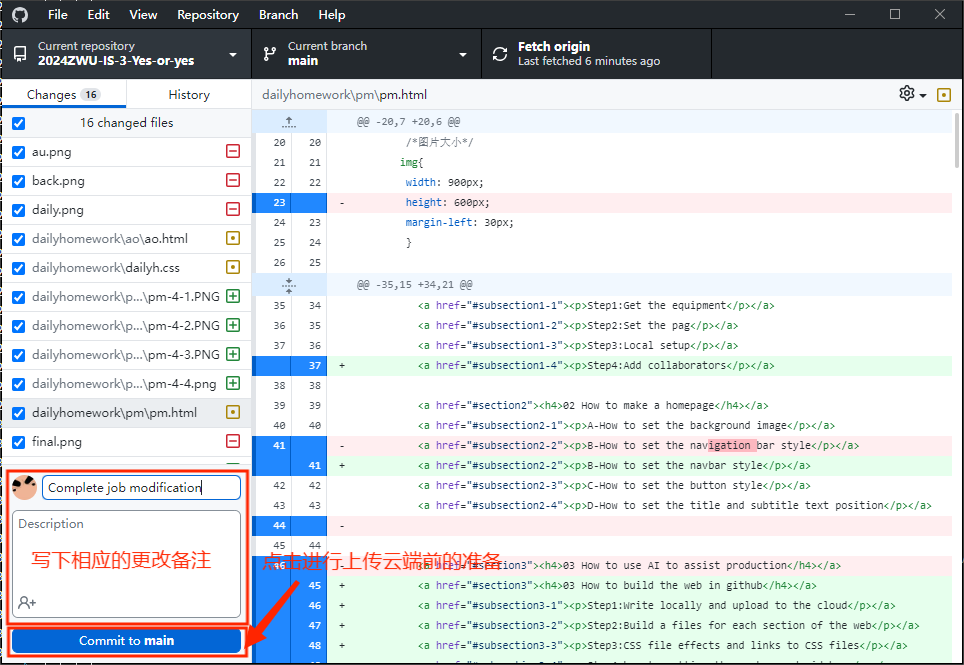
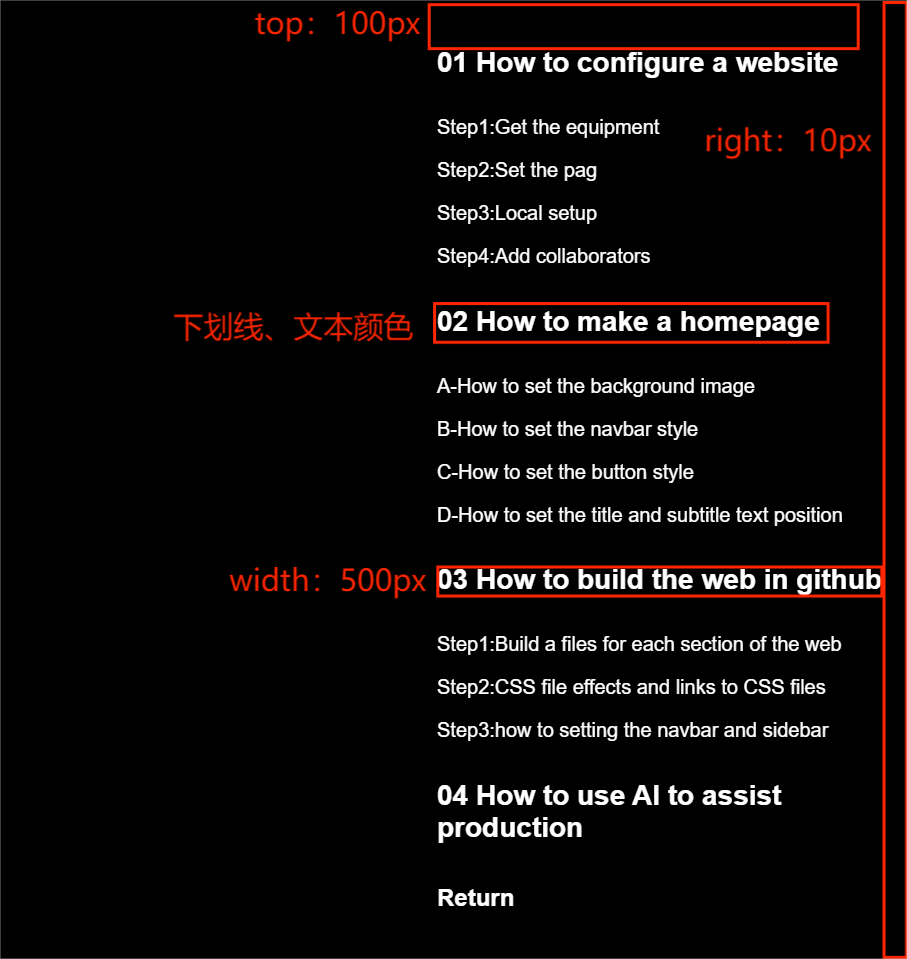
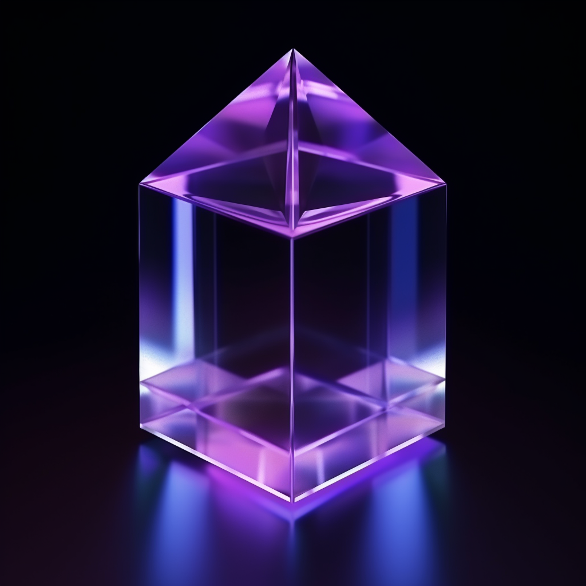

01 How to configure a website
Step1:Get the equipment
Installing all the tools needed to develop the software
1.Git:It serves as a control system for tracking changes to the code base, collaborating, managing
project versions, which allows us to clone, commit, and push changes to GitHub.
2.Github:For our website,we utilize the github service.
3.Github Desktop: To move or push our coding from local to GitHub, we used github desktop.
4.VScode:We used the Visual Studio code to write down our documents.
5.Markdown and Html language:to write our document.
6.CSS: Corresponds with html. Used to style the website
Step2:Set the pag

To start,we need to create a repository to access github.com. Setting the repository name first,
and as we continue to create our repository,we need to set our visibility to Public, allowing
Internet users to access it. And be sure to include a README file in the repository,as this is
where we can provide a comprehensive project description.

Enter the repository,click to settings
Click to Page
Additionally, take note of the following: To activate GitHub Pages for your repository, navigate to
the repository's settings. In the "Pages" section, choose the main source branch, typically named
"main," and designate the folder as "root" before saving your preferences. It's important to select
the "root" folder because a "docs" folder has not yet been established for this repository. Please
be aware that you may need to adjust this setting at a later time. After saving these settings, you
will receive a link to your repository. Sometimes it takes some time to provide a page link.After
one minute you can check the link.
Step3:Local setup
1.Github Desktop
In GitHub Desktop, we go to Files and Clone Repository. After selecting the repository to clone, We
selected the directory to save the cloned repository. Then we click "Clone" to start the cloning
process. Once the cloning is complete, we navigate to the location of the cloned repository.
Clone with our github repository.
Now we can open VS code.
2.VS Code
In the VS code, We opened the terminal and New terminal.
And by Writing "npm i docsify-cli -g" in the terminal and hit enter, we installed docsify.
Next by Writing “ docsify init ./docs”in the terminal,the result is a failure to run.
Notice:cannot be loaded because running scripts is disabled on this system
An error occurred during initialization docsify,can't load docsify.The reason is running mode is
strict ,we can change to Unrestricted or Bypass，use the following code
Set-ExecutionPolicy -Scope CurrentUser-ExecutionPolicyUnrestricted-Force
or Set-ExecutionPolicy -Scope CurrentUser -ExecutionPolicy Bypass -Force.
Now we can start our production.
Step4:Add collaborators
02 How to make a homepage
A-How to set the background image
Use the style tag to add CSS code that defines the style of the background image.
Code
/* Set the background image for the page */
body{
width: 1820px;
height: 890px;
background-image: url("back.png");
background-size: cover;/* Fill the page with background images */
background-repeat: no-repeat;/* Do not repeat the background picture */
background-position: center center;/* Center the background image */
}
Our background image is generated by AI, the specific generation steps can refer to the fourth
part How to use AI to assist produvtion
B-How to set the navbar style
B.1 Use the style tag to add CSS code that defines the style of the navigation bar.
Code
/*Set the navigation bar style*/
.navlist {
position: fixed;
top: 0;
right: 10px;/*Navigation bar location*/
overflow: hidden;
background: transparent;/*The background color of the navigation bar is transparent*/
}
.navlist a{
float: left;/*List landscape*/
display: block;/*The navigation bar blocks each link independently*/
color: white;/*The navigation bar text color is white*/
text-align: center;/*The navigation bar text is centered*/
padding: 12px 16px;
text-decoration: none;/*Ununderline navigation bar text*/
font-size: 20px;/*Navigation bar text size*/
}
.navlist a:hover{
background: white;
color: black;/*When the mouse moves over, the navigation bar becomes white for the module background color and black for the font color*/
}
B.2 Show text in HTML with the a href="" /a code that corresponds to the page and adds text
to the navigation bar link.
Code
<div class="navlist">
<!--Put into list-->
<a href="index.html">Home</a>
<a href="Aboutus.html">About us</a>
<a href="dailyhomework.html">Daily Homework</a>
<a href="finalproject.html">Final Project</a>
</div>
C-How to set the button style
C.1 Use the style tag to add CSS code that defines the style of the button.
Code
/*Set button style*/
.button1{
display: flex;
align-items: center;
justify-content: center;/*Center the content level*/
background-color: transparent;/*The button background color is transparent*/
color: white;/*font color*/
width: 155px;
height: 60px;/*Button length and width*/
border-radius: 50px;/*Rectangle rounded degree*/
text-align: center;
text-decoration: none;/*Ununderline button text*/
font-size: 30px;/*Text size*/
border: 1px solid white;/*Button border thickness and border color*/
position: absolute;
top: 780px;
left: 580px;/*Button position*/
cursor: pointer;/*After the mouse is moved over the button, the cursor style is a hand icon*/
}
C.2 Show text in HTML with the a href class="button"=" " /a code that corresponds to the page and adds text
to the button link.
Code
<a href="Aboutus.html" class="button1">About us</a>
<a href="dailyhomework.html" class="button2">Daily Homework</a>
<a href="finalproject.html" class="button3">Final Project</a>
D-How to set the title and subtitle text position
D.1 Use the style tag to add CSS code that defines the title and subtitle text position.
Code
/*Sets the text position style*/
.center-container{
display: flex;
flex-direction: column;
justify-content: center;/*Center the text horizontally*/
align-items: center;
min-height: 100vh; /*Set the minimum height to the viewport height */
text-align: center;
color:white;/*Set text color*/
}
h1{
font-size: 150px;/*Set the header font size*/
margin-top: 0px;/*Set the header portrait position*/
}
p{
font-size: 24px;
font-weight: 300;/*Set the font weight of the subtitle*/
margin-top: 180px;
}
D.2 Show text in HTML with the h1 and p to put the text we need as the title and subtitle.
Code
<header></header>
<div class="center-container">
<h1>Yes Or Yes</h1>
<p>Welcome to our team's web page!</p>
</div>
03 How to build the web in github
Step1:Write locally and upload to the cloud
a-Write locally
a.1-Open the local github and click Open in Visual Studio Code
a.2-VScode will automatically open the folder corresponding to the library, that is, you can start writing
web code.
b-Upload to the cloud
b.1-Go back to the github local terminal, write down the remarks of this change in the lower left corner
window, and then click Commit to main to prepare before uploading to the cloud.
b.2-Click any Push origin button, after the loading is complete, the changed code information has been
uploaded to the cloud.
Step2:Build a files for each section of the web
In the overall file, our group placed the cover file index.html independently,
and set up another four folders to store the contents of each part of the website.
1-home:In the home file we have the images used for the main page of the web page.
2-dailyhomework:Under this folder, we also set up folders for daily operations, such as pm and ao.
In the corresponding folder we placed the corresponding job web files, reference images and CSS file.
3-finalproject:In this folder we set up folders that show the relevant parts of our final project,
such as the preliminary ideas, and also place the part of the web page files as well as the reference
images and CSS file under these files.
4-aboutus:In this file we placed the team introduction and personal introduction of the website file
and related pictures.
Step3:CSS file effects and links to CSS files
1-CSS file effects
CSS instance for sidebar
Unclicked state
Click state
Code
/*侧边栏样式*/
#sidebar {
position: fixed; /*Set the sidebar to be fixed at a certain position relative to the window and not affected by page scrolling*/
top: 1400; /*Set the distance of the sidebar from the top of the site*/
right: 10px; /*Set the distance of the sidebar from the right side of the site*/
width: 500px; /*Set the sidebar width*/
height: auto; /*The element is told to adjust automatically based on the content*/
background-color: transparent; /*Set the bottom color of the sidebar to transparent*/
border: none; /*The sidebar has no border*/
box-sizing: border-box; /*The actual properties of the sidebar are the height and width defined earlier*/
}
#sidebar ul { /*Part of the unordered list inside the sidebar*/
list-style-type: none; /*Removes the default tag before the list*/
}
#sidebar a { /*Select the a element inside the sidebar*/
text-decoration: none; /*Remove the underline of the link*/
color: white; /*The text color is white*/
}
#sidebar a:hover { /*Hover over the a element*/
color: #4c4c4d; /*The text color turns gray*/
}
2-how to link CSS files
Put code <link rel="stylesheet" href=".css"> in the head of the html file
Code
<head>
<meta charset="UTF-8">
<meta name="viewport" content="width=device-width, initial-scale=1.0">
<link rel="stylesheet" href="../dailyh.css"> /*Link the CSS file in the parent file*/
</head >
Step4:how to setting the navbar and sidebar
1-how to setting the navbar
We talked about it when we build the homepage
2-how to setting the sidebar
2.1-Link CSS files to define the style of the sidebar.
Code
/*侧边栏样式*/
#sidebar {
position: fixed; /*Set the sidebar to be fixed at a certain position relative to the window and not affected by page scrolling*/
top: 1400; /*Set the distance of the sidebar from the top of the site*/
right: 10px; /*Set the distance of the sidebar from the right side of the site*/
width: 500px; /*Set the sidebar width*/
height: auto; /*The element is told to adjust automatically based on the content*/
background-color: transparent; /*Set the bottom color of the sidebar to transparent*/
border: none; /*The sidebar has no border*/
box-sizing: border-box; /*The actual properties of the sidebar are the height and width defined earlier*/
}
#sidebar ul { /*Part of the unordered list inside the sidebar*/
list-style-type: none; /*Removes the default tag before the list*/
}
#sidebar a { /*Select the a element inside the sidebar*/
text-decoration: none; /*Remove the underline of the link*/
color: white; /*The text color is white*/
}
#sidebar a:hover { /*Hover over the a element*/
color: #4c4c4d; /*The text color turns gray*/
}
2.2-Within html the sidebar is defined with the <a href="#"><h4></h4> code to display text and
jump to body links, and the <section id=""> code to define body links and body sections.
Code
<body>
<div id="sidebar">
<!-- Sidebar content -->
<ul>
<li><a href="#section1">headline 1</a></li>
<li><a href="#subsection1-1">subhead 1-1</a></li>
<li><a href="#subsection1-2">subhead 1-2</a></li>
<li><a href="#section2">headline 2</a></li>
<li><a href="#subsection2-1">subhead 2-1</a></li>
<li><a href="#subsection2-2">subhead 2-2</a></li>
</ul>
</div>
<h1 id="section1">headline 1</h1>
<h2 id="subsection1-1">subhead 1-1</h2>
<h2 id="subsection1-2">subhead 1-2</h2>
<h1 id="section2">headline 2</h1>
<h2 id="subsection2-1">subhead 2-1</h2>
<h2 id="subsection2-2">subhead 2-2</h2>
</body>
04 How to use AI to assist production
Use of software: Midjourney international version of gogptai
Step1:Select the part of AI painting to enter
Step2:Enter the graph we want to generate in the box
Input part: a simple purple and pink arc with blue lines in the background, in the style of rim
light, dark blue and light black, pictorial space, undulating lines, data transfer, fiber optic, light
bronze, photographic source
Step3:Model selection: Midjourney, V 5.2
Step4:Using the pad map, choose a more technical style picture，The similarity is 30%
Step5:Choose the size of 16:9, the computer wallpaper to the size, more in line with the size of our page
production cover
Step6:Go to the advanced parameters section, s100, c0, weird0
Step7: Wait for a while to get four images, ready to use 2, click on 2
Step8:The resulting image
Step9:Enter the graph we want to generate in the box
Input part: simple 3d shape, Solid black background, crystal clear, glass look, little bit purple shades,
transparent png, 8K, iridescence opalescence, rendered in cinema 4d
Step10:Model selection: Midjourney, V 5.2
Step11:Using a pad map,The similarity is 70%
Step12:Picture size is 1:1 square
Step13:Go to the advanced parameters section, s100, c25, weird75
Step14:Wait for a while to get four images, ready to use 1 and 3, click on 1 and 3

Step15:
